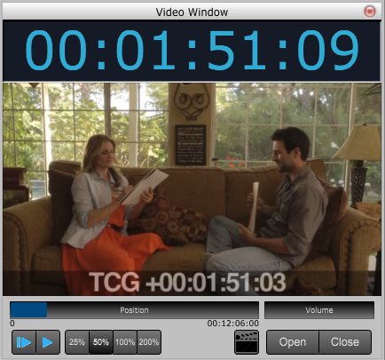

Choose this command to open or close the Vide Window.

The Data View is used to edit the score's MIDI data.
Position Indicator
The position indicator show the current position within the movie.
Volume
Use this slider to set the audio volume from the video.
Play from Beginning
Click this button to start playing the movie and score from the beginning.
Play from Current Position
Click this button to start playing the movie and the score from the current position.
View Size Buttons (25,%, 50%, 100%, 200% )
Click these buttons to resize the window.
Video Marker Button
Click while the movie is playing to insert a Video Marker in your score. The marker will contain the current movie position within the score.
You can double click on video hit points to edit their settings. See Time Code in Score Layout Panel for displaying them as a film cue.
Open Button
Click this button to load a new movie.
Close Button
Click this button the remove the current movie.